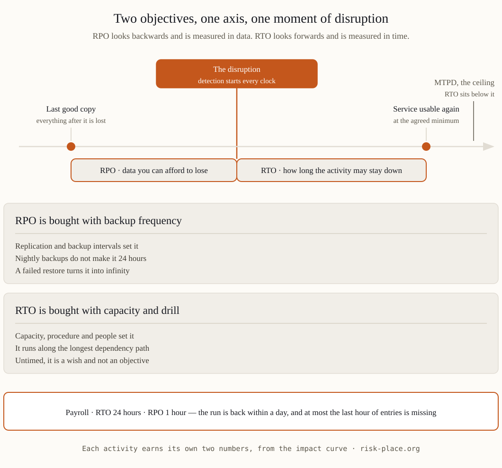

The definitions, without jargon
RTO — Recovery Time Objective — is the maximum time an activity may stay down before the damage becomes unacceptable. It answers: how fast must this be back? RPO — Recovery Point Objective — is the maximum amount of data, measured in time, you can afford to lose. It answers: how old may the last good copy be?
A payroll run with an RTO of 24 hours and an RPO of one hour means: payroll must work again within a day, and when it does, at most the final hour of entries may be missing. Two different promises, two different sets of arrangements — recovery capacity for the first, backup frequency for the second.
How to set them honestly
- From the impact curve, not from comfort. The BIA draws how damage grows over hours and days; the RTO sits just before the curve steepens. If you have no curve, you have no basis for the number.
- Per activity, not per company. «Our RTO is 4 hours» is meaningless across a whole business. Invoicing, production, regulatory reporting each earn their own numbers.
- Check feasibility against arrangements. An RTO of 4 hours with nightly-restore-only backups is fiction. Either invest to close the gap or state the honest, longer RTO.
- Mind the chain. An activity's real recovery time is the longest path across its dependencies — system restore plus data check plus people in place. RTOs set per system, ignoring the chain, understate reality.
| Example activity | Typical RTO | Typical RPO | What usually sets the limit |
|---|---|---|---|
| Online sales / payments | Minutes to 4 hours | Near zero | Revenue per hour; replication cost rises steeply near zero |
| Production line control | 2-24 hours | Last shift | Restart procedures and safety checks, not IT alone |
| Invoicing and payroll | 24-72 hours | 1-24 hours | Contractual dates and staff trust |
| Regulatory reporting | Before the deadline | Last submission | The calendar, not the technology |
The tell of a fictional RTO: it has never been demonstrated. An objective that has not survived a timed test is a wish. Auditors — and incidents — treat it accordingly.

The classic mistakes
- Copying vendor numbers. A platform's advertised recovery speed is not your activity's RTO — your data volumes, procedures and people set the real time.
- Zero-everything ambitions. RTO zero and RPO zero exist — at a price few activities justify. The BIA tells you which ones.
- Confusing RPO with backup schedule. Backups nightly does not make RPO 24 hours — a failed restore makes it infinity. RPO lives or dies with tested restores.
- Setting once, forgetting. Volumes grow, systems change; last year's demonstrated 6 hours may be 14 today. Objectives age like the BIA they came from.
Frequently asked questions
What is the difference between RTO and MTPD?
MTPD (maximum tolerable period of disruption) is the ceiling — beyond it damage is unacceptable by definition. The RTO is set below it with a safety margin. NCEMA 7000 and ISO 22301 both use this layering.
Who approves RTO and RPO?
Activity owners propose from the impact curve, technology confirms feasibility, leadership approves the residual gap — because an unmet objective is an accepted risk, and accepting risk is leadership's job.
How often should objectives be revalidated?
At every BIA refresh, after material change, and at least at the annual exercise — where «revalidated» means demonstrated against the clock, not re-signed.